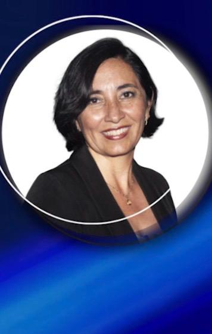
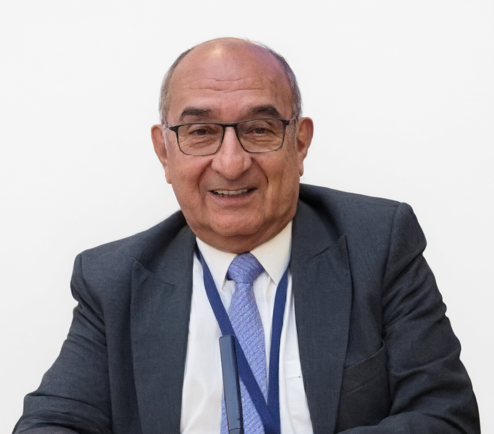
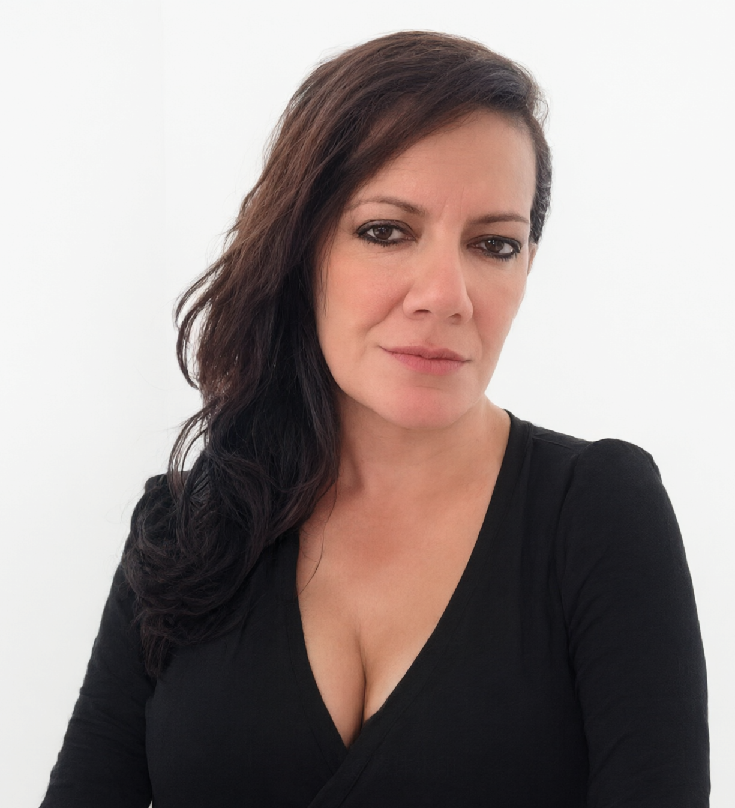

Encuentro de Narrativas Territoriales de Investigación e Innovación
Centro Universitario Girardot – UNIMINUTO

Experta en Comunicación y Narrativas Territoriales
Reconocida investigadora y comunicadora social con amplia trayectoria en proyectos de apropiación social del conocimiento. Su ponencia magistral abordará el papel de las narrativas audiovisuales en la visibilización de la investigación universitaria y su impacto en el desarrollo territorial.
Formato Reel/TikTok/Shorts (45-90 seg). Comunicación rápida y dinámica para redes sociales.
Horizontal o Vertical (3-5 min). Investigación de campo, entrevistas y evidencias reales.
Expertos nacionales y regionales evaluarán las obras bajo criterios de rigor científico, apropiación territorial y creatividad narrativa.

Comunicador social con amplia trayectoria en análisis político y económico. Fundador y director de Noticias Siglo XXI. Experto en comunicación estratégica y divulgación científica.

Egresada de la Universidad Autónoma del Caribe. 20 años de periodismo social en Girardot, exreportera de DW Televisión (16 años). Columnista de Wam Noticias y miembro de ASOCOMEDIOS.
¡Estamos preparando algo especial! La galería digital con las 14 obras finalistas estará disponible muy pronto. Actualmente, el comité organizador se encuentra en la fase de curaduría técnica y validación de contenidos para garantizar una experiencia audiovisual impecable durante la gala del 21 de noviembre. ¡Pronto podrás descubrir las narrativas que están transformando nuestro territorio!